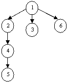

Юный хакер Петя написал вирус, который работает в сети Internet. Сначала вирус заражает какой-нибудь сервер. Затем вирус находит все компьютеры, с которыми соединен сервер (если вирус однажды побывал на каком-нибудь компьютере, то повторно он туда не зайдет) и заражает их. Сам сервер вирус считает компьютером 1-го порядка; все компьютеры, соединенные с сервером, - 2-го порядка; все дочерние компьютеры компьютеров 2-го порядка вирус считает компьютерами 3-го порядка и т.д.
Например, на рисунке изображенном слева, компьютер №1 – компьютер 1-го порядка; компьютера №2,3,6 – компьютеры 2-го порядка; компьютер №4 – компьютер 3-го порядка; компьютер №5 – компьютер 4-го порядка. Известно, что у компьютера №X есть ровно один «начальник», причем с номером Y таким, что Y<X (например, у компьютера №2 есть «начальник» - компьютер №1). Петя сообщает своему вирусу некоторое число M. Вирус, последовательно заражая компьютеры в сети, стирает данные на всех компьютерах M-го порядка.
Требуется написать программу, которая по заданному числу X – номеру компьютера, информацию на котором нужно уничтожить, находит число M. Учтите, что в заражаемой сети есть всего лишь один сервер (он всегда имеет номер 1).
Входные данные
В первой строке теста находится число S (S≤30000) – количество компьютеров в сети (компьютер №1 считается компьютером 1-го порядка). Во второй строке файла находится (S-1) чисел разделенных пробелом. Первое число в этой последовательности – это номер компьютера начальника второго компьютера, второе число – это номер компьютера начальника третьего компьютера и т.д. В третьей строке файла содержится число X.
Выходные данные
Ответ состоит из одной строки, в нее необходимо поместить число M.
|
Пример теста |
Пример ответа |
|
1 6 1 1 2 4 1 4 |
3 |
Источник: Денис Назаров. Олимпиады школьников в Уфе.